Welcome
Here you can view some of my projects, publications, artwork, and code.
Scroll down or click on a link to explore.
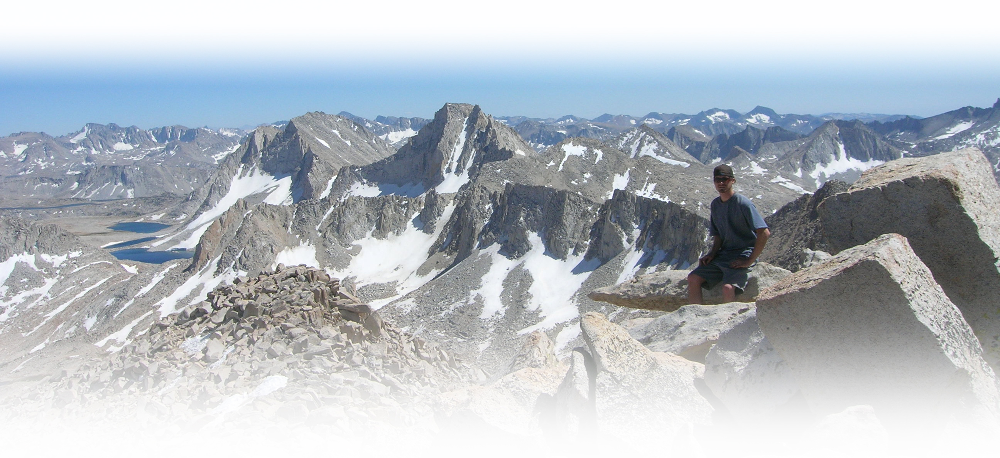
Hardware/software integration for automated systems control and data management
Nanoscale engineering of functional materials has led to development of 0-dimensional (quantum dots and nanoparticles), 1-dimensional (nanowires), and 2-dimensional (graphene, MoS2, MXenes, etc.) structures which show promise as building blocks for high-performance optoelectronic devices. Beacuse of their high surface area, thin film/nanostructured materials often exhibit multi-modal (electronic, optical, morphological, viscoelastic, etc.) responses to a broad range of different environmental stimuli (temperature, pressure, humidity, oxygen concentration, etc.). Comprehensive characterization of the way in which nanomaterials interact with their environments is vital for improving the stability and performance of organic electronics and environmental sensors like those deployed in wireless sensing networks for internet of things (IoT) applications. In order to efficently characterize the environmental response of multiple materials under a wide range of conditions, I developed a flexible environmental system in which ambient conditions can be controlled and multiple responses of materials/devices are probed in situ.
A schematic diagram of the system is shown below. The devices/materials under test are situated in a vacuum chamber where temperature, light intensity, pressure, humidity, and concentrations/mixtures of different gases can be controlled in real-time. While environmental conditions are changing, optical/electrical/gravimetric properties are measured using a combination of source-measure units, network analyzers for electrochemical impedance spectroscopy, and a semiconductor characterization system. Optical absorption is measured by optical spectrometer, and the optical and electrical measurements are correlated to mass changes in the material under test by multiple quartz crystal microbalance (QCM) systems. Correlation of optoelectronic properties to a mass changes provide valuable information about the effect of adsorption or desorption of gas/vapor on the functional properties of the material.
Below is a photo of the actual system at the Center for Nanophase Materials Sciences at Oak Ridge National Laboratory. The central software developed in python and LabVIEW enables control of over 10 different instruments, automated data collection, and full environmental control.
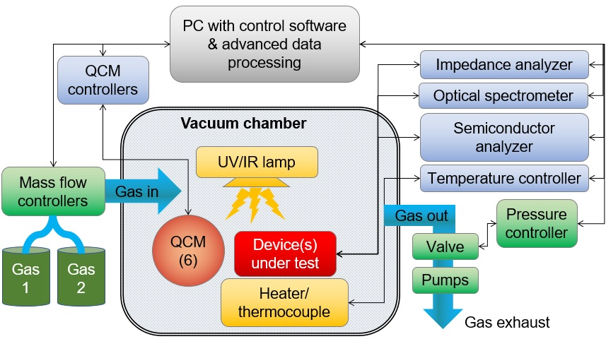
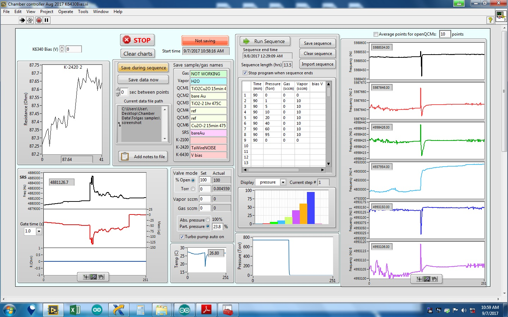
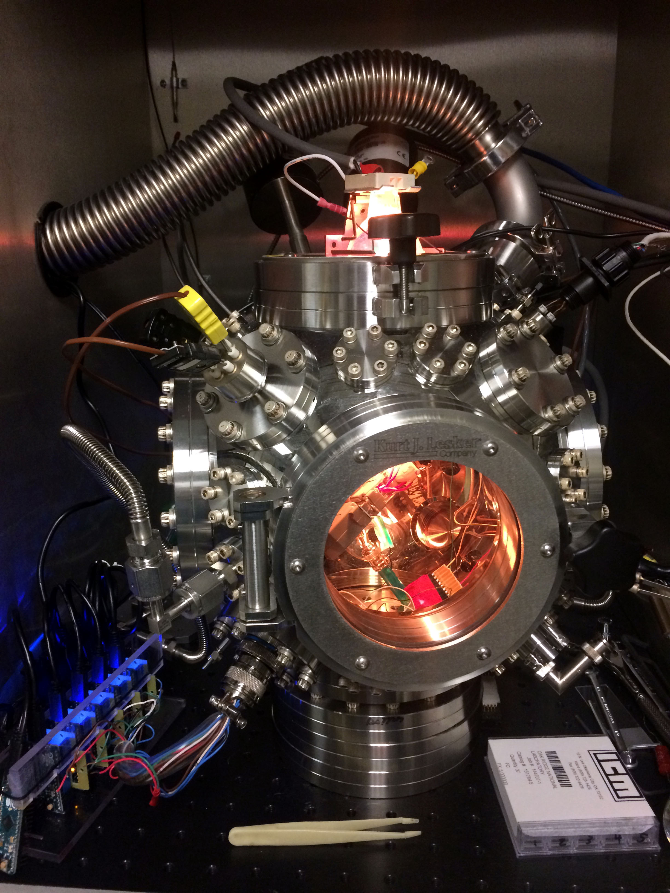
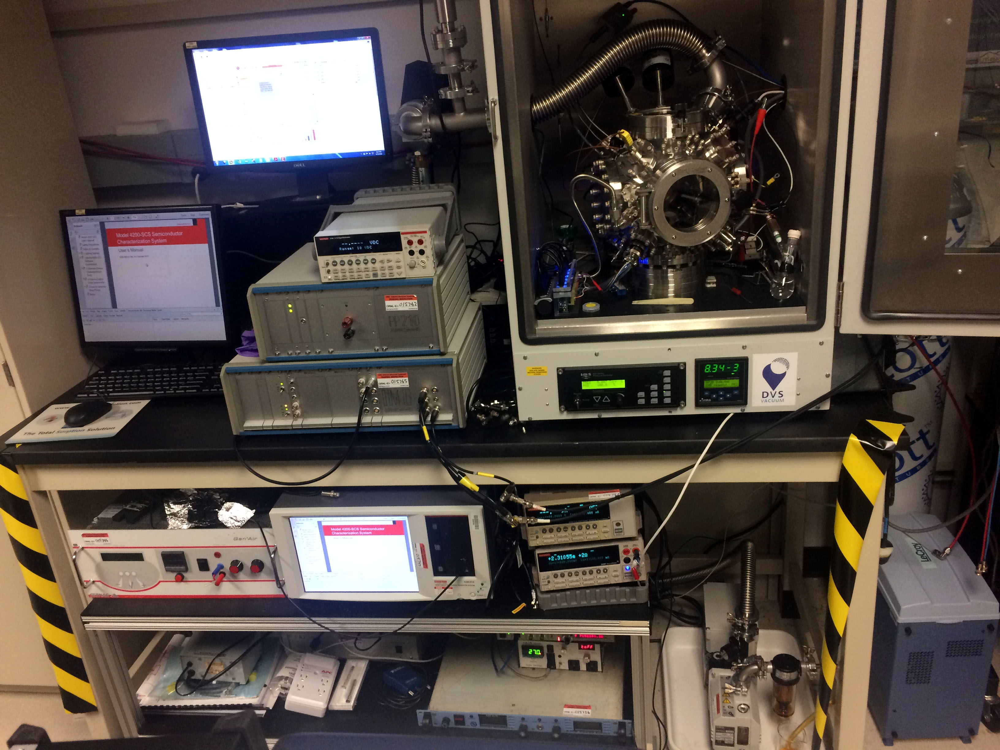
Batch analysis of sensor data
Effective analysis and full utilization of large complex datasets can be prohibitively time-consuming without the right software and analytical tools. For rapidly processing sensor data, I created an automated system which models and predicts sensor response by batch fitting raw signals to different time-series models in real time. In the example shown below, sensing material is exposed to a pulsed stimulus, which may correspond to any environmental change (temperature fluctuation, pressure spike, humidity shift, etc). Response of the sensor during exposure to the environmental stimulus is automatically divided into regions of interest (ROI) where the interesting dynamics occur. Signals in each ROI are then normalized and background is subtracted so that kinetics can be compared across each ROI. A mathematical model is selected (either automatically or manually, based on the data type) and the signal in each ROI is fit to the model. Full fits, fitting parameters and fit quality metrics are extracted for comprehensive characteriation of the sensor dynamics and response. The algorithm is designed to handle data types emanating from diverse sources (i.e. gravimetic, electrical, optical, etc.) so that complex data streams from multi-modal sensor arrays may be processed efficiently.
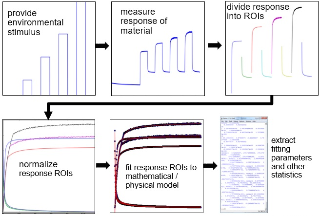
Machine learning for intelligent sensor networks
It is often necessary to employ advanced statistical techniques or machine learning algorithms for analyzing large complex datasets. Shown below are simple examples of binary classifer algorithms designed to distinguish between the response of a quartz crystal during exposure to CO2 (blue points) and O2 (red points). Regularized data is shown in the plot on the left while data with learned classification boundaries using different classification algorithms are shown to the right. In this case, the k-nearest neighbors (k-NN) algorithm results in >95% accuracy in distinguishing between CO2 and O2.
Artificial neural networks (ANNs) are powerful machine learning tools used for approximating classification and regression/forecasting problems without the need for an analytical model. One of the primary challenges associated with the use of ANNs is optimization of the network design, as ANNs may contain many hidden neuron layers, each containing large numbers of neurons. Furthermore, learning rate and quality and quantity of data used for training/testing/validatting the network may significantly impact the prediction accuracy achieved by the network. The diagram below shows an example of ANN performances and training times when the number of neurons in the 1st and 2nd hidden layers are altered. To account for the stochastic nature of ANNs, each pixel represents the average performance/training time of 25 different networks. Analysis of network performance enables the end user to select the balance between accuracy and training time desired for a specific application.
In published journal articles, I describe the use of ANNs for distinguishing between pressure changes and humidity changes here, demonstrate deep learning applications for gas sensing/identification here, and demonstrate classification between oxygen nad water based on response kinetics using other machine learning techniques here.
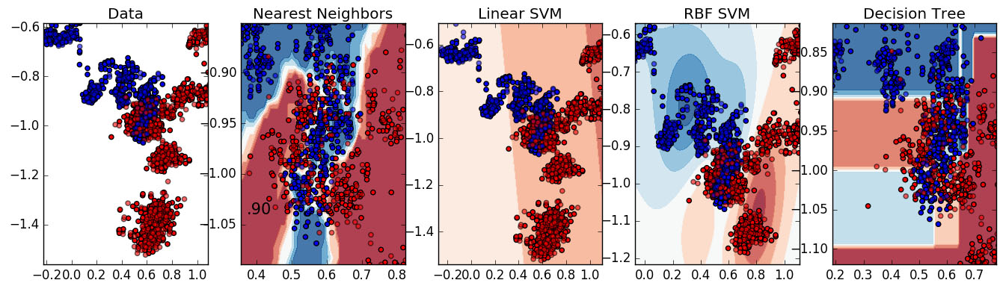
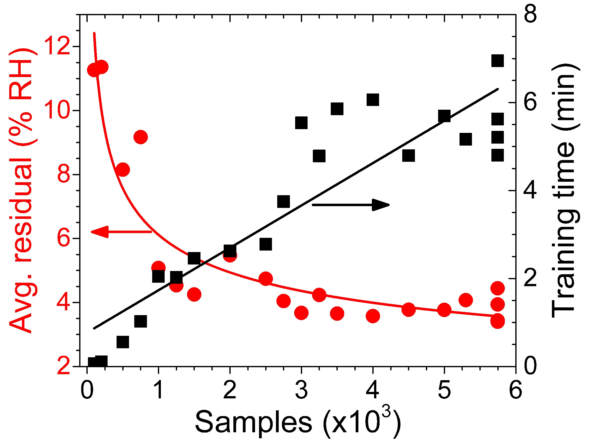
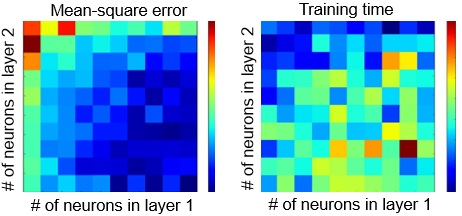
Signal processing + spectral deconvolution
Analysis of spectral data is central to nearly all fields of science and engineering. Deconvoluting a spectrum into its constituent peaks is essential for tracking the properties of individual components during dynamic peak shifting. In most commercial peak-fitting software, the end user must designate the positions at which they expect to find primary peaks, usally by clicking on the most obvious peaks present in the spectrum. For analysis of hundreds or thousands of spectra, manual selection of peaks is not possible. Even a single spectrum which contains a large number of peaks is often too complex to be deconvoluted manually. Below is an example of Raman spectra measured at different locations on a protein substrate. Manual selection of peaks for each spectrum would be prohibitely time consuming. I built a peak fitting algorithm which allows simple automated identification of peaks, shown below.
With accurate estimates for peak positions, each spectrum can be fit to a linear combination of Gaussian peaks (or any other probability density distribution). The combination of peaks (black line) accurately reproduces the original spectrum (red line). The threshold for peak identification can be raised or lowered based on the desired fitting quality and the number of peaks present. After each major peak is identified, the peak positions, amplitudes, and widths are extracted and compared between spectra or tracked over time. Below are histograms measured from over 1000 peaks from the same Raman spectroscopy experiments. The automated spectral analysis algorithm yields accurate, rapid, and reproducible characterization of peak data when manual peak selection and fitting is undesirable or impossible.
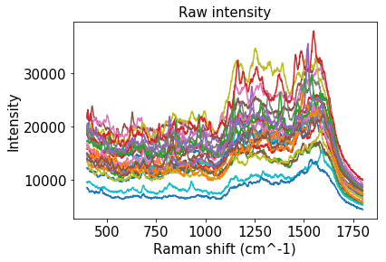
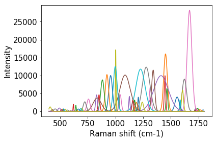
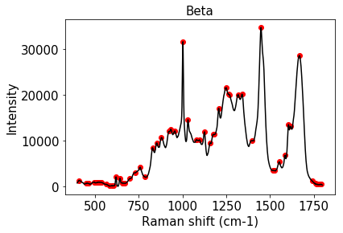
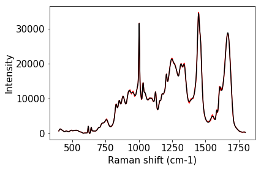
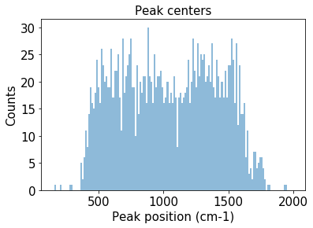
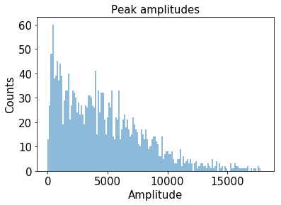
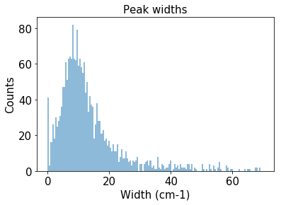
Noise analysis using statistics and artificial neural networks
Every physical measurement undergoes small variations due to environmental fluctuations and/or limitations in instrument precision. The "noise" associated with a measured signal is usually viewed as detrimental to the quality of the measurement. However, it is possible to obtain useful information from analysis of noise signals. I developed software which performs batch analysis of correlated electrochemical noise. Information buried in the noise may be used for environmental sensing applications in which little or no power is needed for the sensor operation. Shown below are frequency-dependent voltage and current noise measured from metallic carbon nanotubes exposed to different humidities over time. Using the humidity-dependent noise to train an artificial neural network can allow accurate prediction of humidity levels in real time.
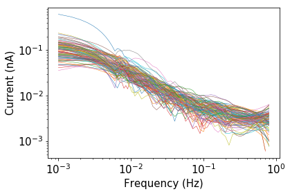
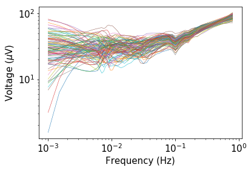
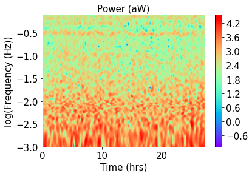
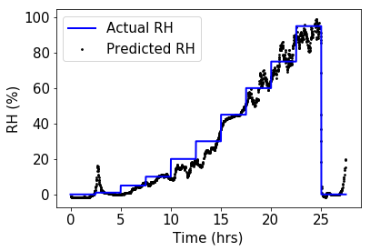
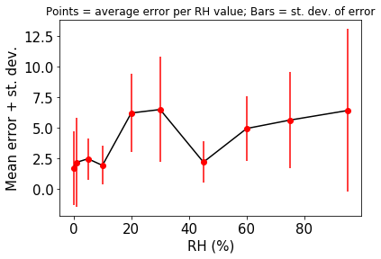
Multiscale ultra-wide frequency materials characterization
The explosion of new low-dimensional materials and nanostructures highlights the importance of comprehensive high-throughput functional characterization. For characterizing environmental response of materials for sensor applications in particular, it is important to link mesoscale response to nanoscale phenomena under a broad range of excitation frequencies. We begin by using gravimetric techniques such as thermogravimetric analysis (TGA) and quartz crystal microbalance (QCM) to quantify gas/vapor uptake of materials under different environments at nanogram resolution. Analyte uptake is then correlated to changes in functional properties which we measure under ultra-wide frequency excitation. Diret current (DC) electrical resistance, current-voltage (I-V) characteristics, and gate-bias/transistor behavior is measured at steady state (0 Hz). At higher frequencies (0.01 mHz - 8 MHz range), ionic transport, capacitance, and electrical impedance is characterized. These measurements are linked to results from optical experiemnts measured at high frequencies (1 THz range) which enables a "stitching together" of envionmental response all the way from 0 Hz to THz range.
The ultra-wide frequency mesoscale characterization is then correlated to nanoscale phenomena using morphological/structural information obtained from atomic force microscopy (AFM), and electrical/surface potential measurements obtained from Kelvin probe force microscopy (KPFM). This workflow allows comprehensive materials characterization and allows us to link the environmental response of sensor materials across an ultra-wide frequency range and connent mesoscale to nanoscale, optical to electronic, and functional response to gravimetric response.
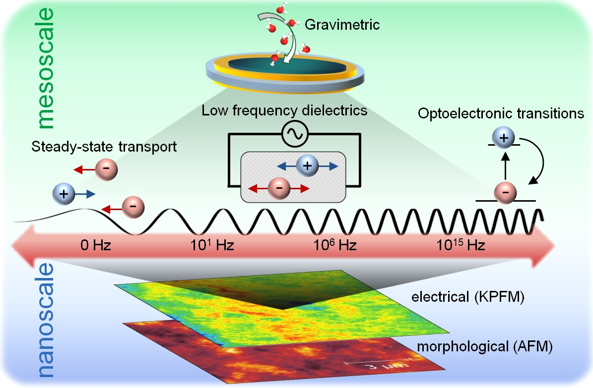
Low-cost sensor array for environmental monitoring and IoT applications
Demand for low cost sensors has exploded with proliferation and deveopment of internet of things (IoT) devices, including personal wearable sensors, "smart" textiles, and autonomous vehicles, which often rely on the use of wireless sensor networks to continuously relay data back to network nodes where data processing is performed. Rapid systematic testing of new sensors and sensing materials is essential for increasing quantity and improving quality of environmental data acquired by sensing networks. The quartz crystal microbalance (QCM) is a bulk acoustic wave sensor used for probing molecular adsorption/desorption events with sub-nanogram resolution. The QCM has found use in a wide range of sensing applications, including gas/vapor sensing for environmental monitoring, detection of proteins and enzymes for biomedical sensing, and inclusion in sensor arrays for electronic nose (e-nose) technologies. Commercially-available QCM systems are prohibitively expensive (over $2,000 per sensor) for many applications, particularly when used in arrays containing multiple crystals. To circumvent this problem, I developed a low-cost QCM array using an open-source Pierce oscillator circuit built by openQCM and powered by the versatile Arduino platform.
The 6-crystal prototype can be easily inserted and removed from a multi-functional controlled testing chamber where reponse of the sensor array is studied under different environmental conditions. The advantage of a multi-crystal array is that each crystal can be coated with a different sensing film, which allows simultaneous characterization of up to 6 sensor materials under identical environmental conditions.
The array is controlled by custom software written in LabVIEW and the Arduino development platform. The array is inherently scalable, where each additional crystal requires ~$100, which is ~10 times less expensive than most commercially-available QCM systems. When compared against the $2,500 commercial QCM system manufactured by a leading QCM supplier, the custom-built system achieves the same resolution and even faster response times. A published conference proceedings article describing the QCM array and its associated deep learning applications can be found here.
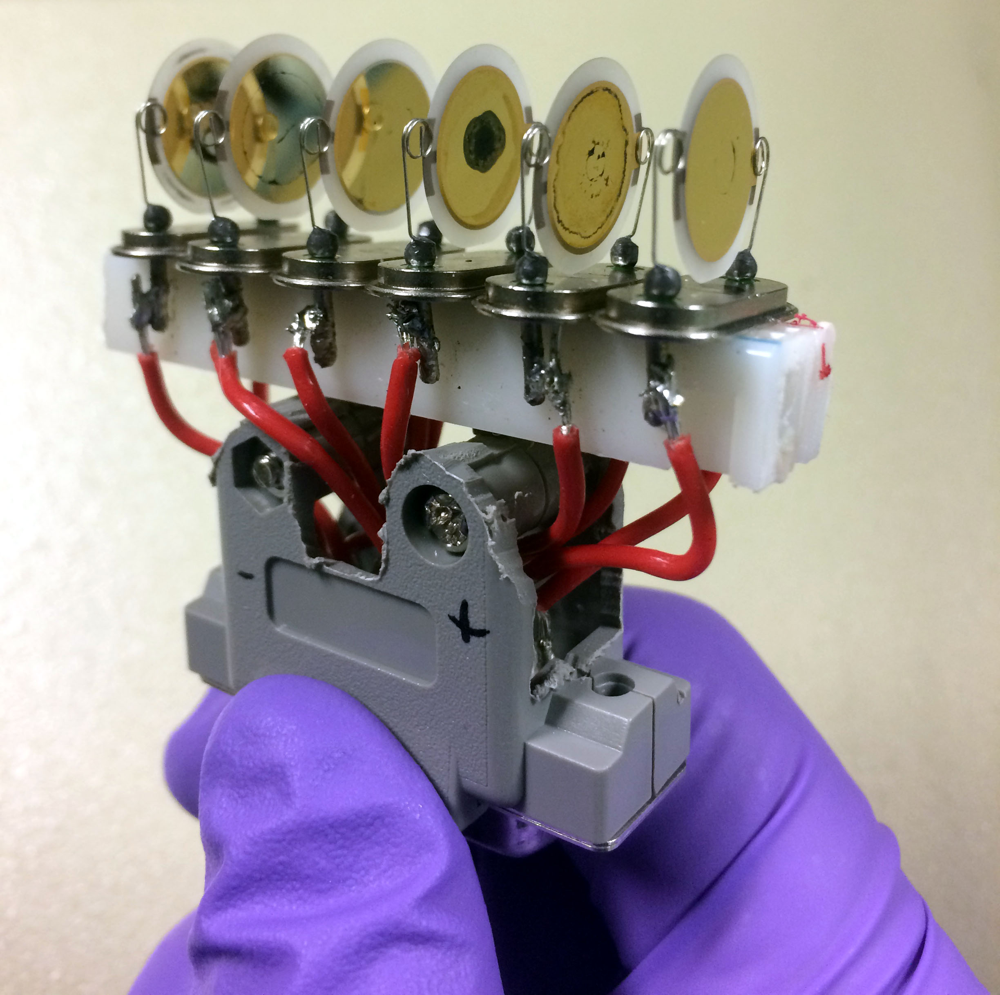
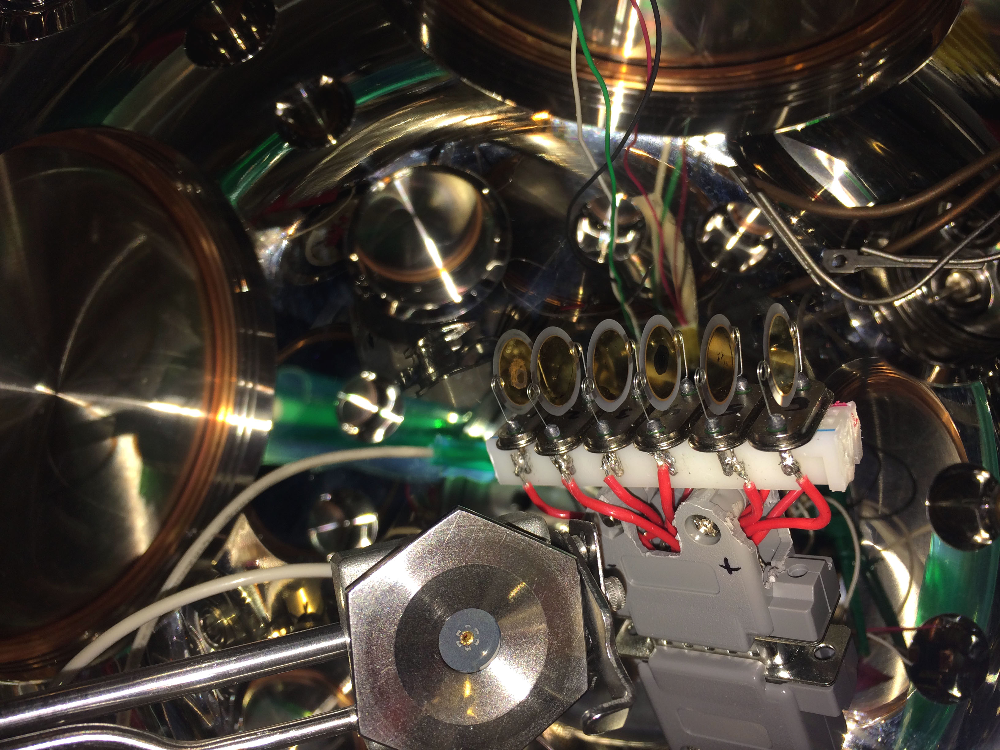
Publications
Selected peer-reviewed journal articles
Tisdale, J.T., Muckley, E. S., Ahmadi, M., Smith, T., Seal, C., Lukosi, E., Ivanov, I.N. and Hu, B., 2018. Dynamic Impact of Electrode Materials on Interface of Single‐Crystalline Methylammonium Lead Bromide Perovskite. Advanced Materials Interfaces, p.1800476.
Tatarko, M., Muckley, E.S., Subjakova, V., Goswami, M., Sumpter, B.G., Hianik, T. and Ivanov, I.N., 2018. Machine learning enabled acoustic detection of sub-nanomolar concentration of trypsin and plasmin in solution. Sensors and Actuators B: Chemical.
Muckley, E.S., Naguib, M., Wang, H.W., Vlcek, L., Osti, N.C., Sacci, R.L., Sang, X., Unocic, R.R., Xie, Y., Tyagi, M. and Mamontov, E., 2017. Multimodality of Structural, Electrical, and Gravimetric Responses of Intercalated MXenes to Water. ACS nano, 11(11), pp.11118-11126.
Muckley, E.S., Jacobs, C.B., Vidal, K., Lavrik, N.V., Sumpter, B.G., Ivanov, I.N., 2017. Multi-mode humidity sensing with water-soluble copper phthalocyanine for increased sensitivity and dynamic range. Scientific Reports, 7(1) 9921.
Muckley, E.S., Jacobs, C.B., Vidal, K., Mahalik, J.P., Kumar, R., Sumpter, B.G. and Ivanov, I.N., 2017. New Insights on Electro-Optical Response of Poly (3, 4-ethylenedioxythiophene): Poly (styrenesulfonate) Film to Humidity. ACS Applied Materials and Interfaces, 9(18), pp.15880-15886.
Jacobs, C.B., Maksov, A.B., Muckley, E.S. , Collins, L., Mahjouri-Samani, M., Ievlev, A., Rouleau, C.M., Moon, J.W., Graham, D.E., Sumpter, B.G. and Ivanov, I.N., 2017. UV-activated ZnO films on a flexible substrate for room temperature O2 and H2O sensing. Scientific Reports, 7.
Jacobs, C.B., Wang, K., Ievlev, A.V., Collins, L., Muckley, E.S. and Ivanov, I.N., 2017. Functional two/three-dimensional assembly of monolayer WS2 and nickel oxide. Journal of Photonics for Energy, 7(1), pp.014001-014001.
Muckley, E.S., Lynch, J., Kumar, R., Sumpter, B. and Ivanov, I.N., 2016. PEDOT: PSS/QCM-based multimodal humidity and pressure sensor. Sensors and Actuators B: Chemical, 236, pp.91-98.
Muckley, E.S., Nelson, A.J., Jacobs, C.B. and Ivanov, I.N., 2016. Multimodal probing of oxygen and water interaction with metallic and semiconducting carbon nanotube networks under ultraviolet irradiation. Journal of Photonics for Energy, 6(2), pp.025506-025506.
Jacobs, C.B., Ievlev, A.V., Collins, L.F., Muckley, E.S., Joshi, P.C. and Ivanov, I.N., 2016. Imaging of electrical response of NiOx under controlled environment with sub-25-nm resolution. Journal of Photonics for Energy, 6(3), pp.038001-038001.
Muckley, E.S., Miller, N., Jacobs, C.B., Gredig, T. and Ivanov, I.N., 2016. Morphology-defined interaction of copper phthalocyanine with O2/H2O. Journal of Photonics for Energy, 6(4), pp.045501-045501.
White papers
Degradation mechanisms in low bandgap polymer-fullerene photovoltaic devices.
Download PDF
Feasibility study for photovoltaic array at Bishop Airport in Owens Valley, California.
Download PDF
Review and recommendation for United States water policy.
Download PDF
Theses
Undergraduate thesis:
Constructing a magneto-optical trap for cold atom trapping
Master of science thesis:
Optimization of film morphology for the performance of organic thin film solar cells
For a full list of publications and other projects, visit my pages at Google scholar or ResearchGate.
Presentations
International conference presentations + invited talks
Muckley, E.S., Ivanov, I.N., Computer-controlled high-throughput functional characterization of thin films. May 2018. Department of Materials, St. Anne’s College, University of Oxford. Oxford, UK.
Muckley, E.S., Jacobs, C.B., Vidal, K., Mahalik, J.P., Kumar, R., Sumpter, B.G. and Ivanov, I.N., Effect of humidity on electronic and ionic conduction in PEDOT:PSS. August 2017. SPIE Organic Photonics + Electronics. San Diego, CA, USA.
Muckley, E.S., Naguib, M., Wang, H.-W., Vleck, L., Osti, N.C., Sacci, R.L., Sang, X. , Unocic, R.R., Xie, Y., Tyagi, M., Mamontov, E., Page, K.L., Kent, P.R.C., Nanda, J., and Ivanov, I.N., Structural, electrical, and gravimetric responses of K- and Mg-intercalated MXenes to water. August 2017. SPIE Organic Photonics + Electronics. San Diego, CA, USA.
Muckley, E.S. and Ivanov, I.N., Machine learning and automation for probing environmental response of sensor materials. May 2017. Comenius University. Bratislava, Slovakia.
Muckley, E.S., Miller, N., Gredig, T., and Ivanov, I.N., Effect of film morphology on oxygen and water interaction with copper phthalocyanine. August 2016. SPIE Organic Photonics + Electronics. San Diego, CA, USA.
Jacobs, C.B., Wang, K., Ievlev, A.V., Collins, L., Muckley, E.S. and Ivanov, I.N., Functional two/three-dimensional assembly of monolayer WS2 and nickel oxide. August 2016. SPIE Organic Photonics +Electronics. San Diego, CA, USA.
Muckley, E.S., Nelson, A., Jacobs, C B., and Ivanov, I.N., Effect of UV irradiation on adsorption/desorption of oxygen and water on carbon nanotubes. February 2016. SPIE Photonics West. San Francisco, CA, USA.
Muckley, E.S., Anazagasty, C., Jacobs, C.B., Hianik, T., and Ivanov, I.N., Low-cost scalable quartz crystal microbalance array for environmental sensing. August 2016. SPIE Organic Photonics + Electronics. San Diego, CA, USA.
Muckley, E.S., Jacobs, C.B., Wang, K., Collins, L., Ievlev, A., and Ivanov, I.N., Spatially resolved resistance of NiO nanostructures under humid environment. February 2016. SPIE Photonics West. San Francisco, CA, USA.
Muckley, E.S. and Ivanov, I.N., Peeking at the Mechanisms of sensor operation and environment-induced degradation of electronic devices. June 2015. Brazilian Synchrotron Light Laboratory. Campinas, Brazil.
Muckley, E.S. and Gredig, T., Effect of morphology on performance of organic thin film solar cells. May 2014. California State University Long Beach Student Research Competition. Long Beach, CA, USA.
Published conference preceedings
Muckley, E.S., Anazagasty, C., Jacobs, C.B., Hianik, T. and Ivanov, I.N., 2016, September. Low-cost scalable quartz crystal microbalance array for environmental sensing. In SPIE Organic Photonics+ Electronics (pp. 99440Y-99440Y). International Society for Optics and Photonics.Muckley, E.S., Miller, N., Gredig, T. and Ivanov, I.N., 2016, September. Effect of film morphology on oxygen and water interaction with copper phthalocyanine. In SPIE Organic Photonics+ Electronics (pp. 99440V-99440V). International Society for Optics and Photonics.
Muckley, E.S., Nelson, A.J., Jacobs, C.B. and Ivanov, I.N., 2016, February. Effect of UV irradiation on adsorption/desorption of oxygen and water on carbon nanotubes. In SPIE OPTO (pp. 97451K-97451K). International Society for Optics and Photonics.
Jacobs, C.B., Wang, K., Ievlev, A.V., Muckley, E.S. and Ivanov, I.N., 2016, September. Towards functional assembly of 3D and 2D nanomaterials. In SPIE Nanoscience+ Engineering (pp. 99290C-99290C). International Society for Optics and Photonics.
Jacobs, C.B., Ievlev, A.V., Collins, L.F., Muckley, E.S., Joshi, P.C. and Ivanov, I.N., 2016, February. Spatially resolved resistance of NiO nanostructures under humid environment. In SPIE OPTO (pp. 97491Q-97491Q). International Society for Optics and Photonics.
Original artwork and music
To see my artwork or music, visit my art page or music page.
Click on an image to view in higher resolution.
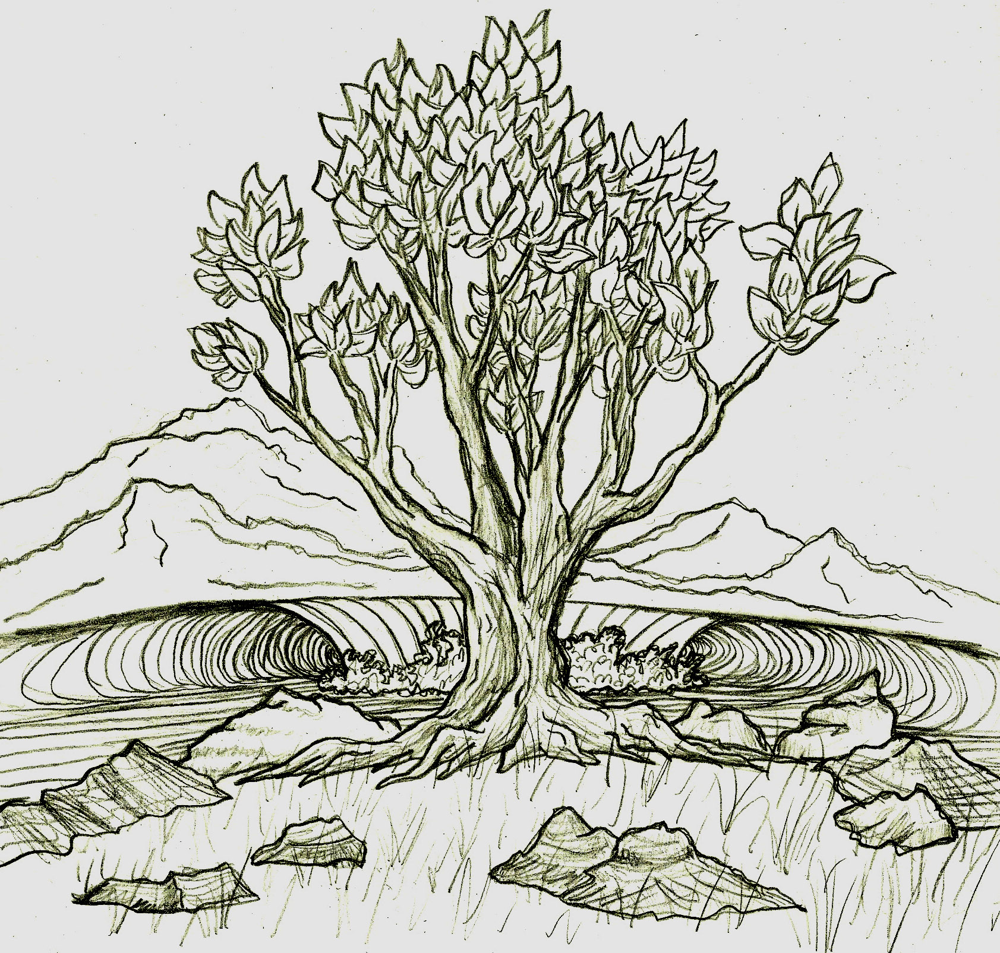
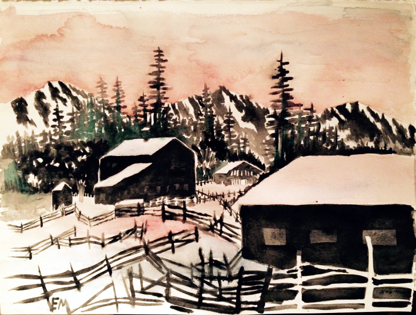
Contact info and other links
To contact me or learn more, visit my pages at:
LinkedIn
ResearchGate
Google scholar
ORCID